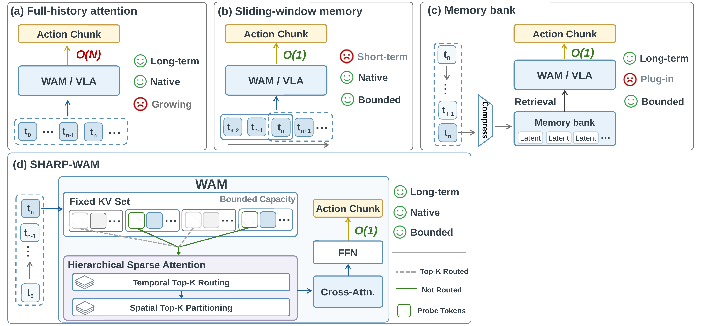
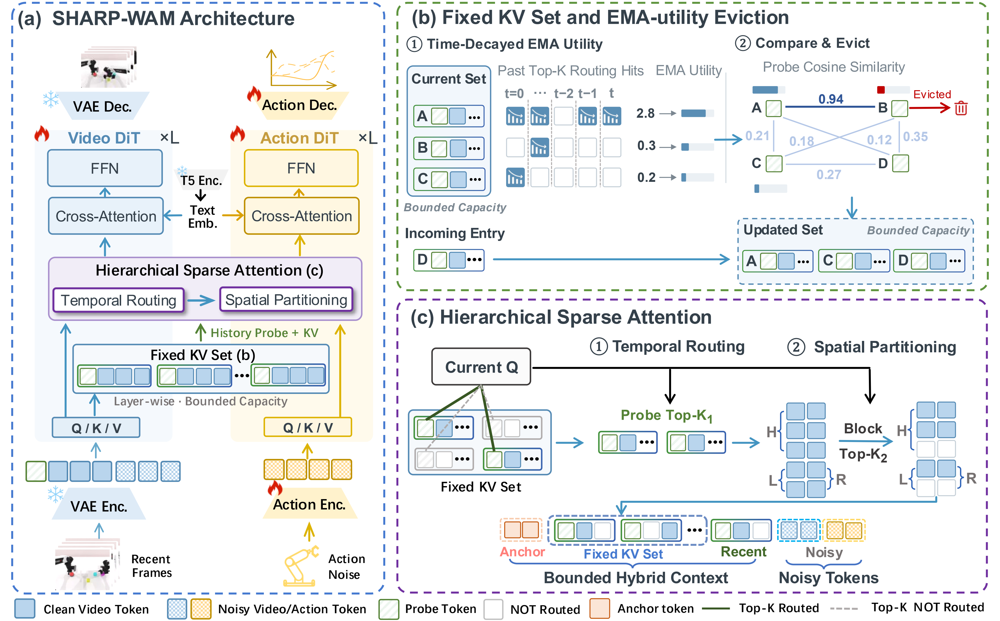
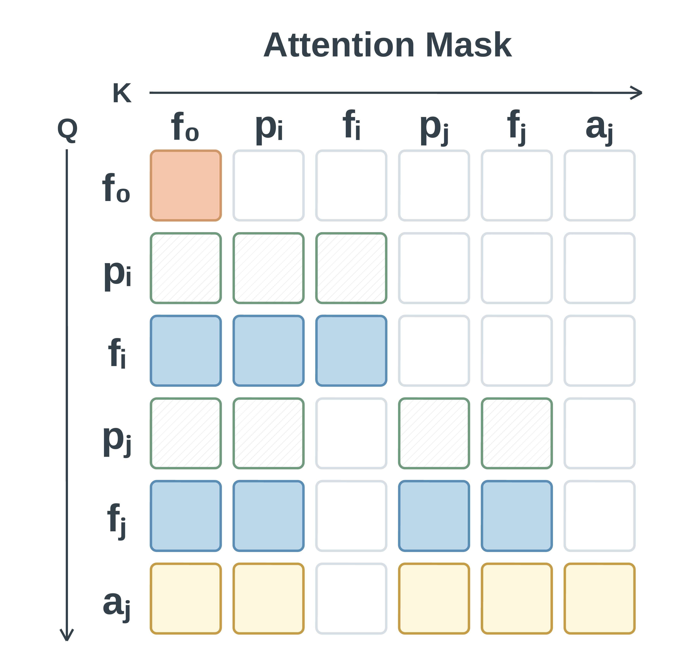

ICLR 2027 · Anonymous submission
SHARP-WAM: Sparse Hierarchical Attention with Probe Tokens for Bounded-Context World Action Modeling
Anonymous Affiliations
Abstract
World Action Models (WAMs) jointly model visual dynamics and action execution, but extending their context to long-horizon manipulation makes dense historical attention increasingly costly. SHARP-WAM introduces backbone-native hierarchical sparse attention with learnable probe tokens. Probes summarize visual observations and provide compact interfaces for maintaining a fixed-capacity KV set through EMA-utility-guided eviction. A coarse-to-fine attention mechanism first retrieves relevant historical frames, then selects camera-aware spatial blocks and accesses their original key–value states. This combines bounded historical context with selective access to fine-grained visual information.

THE APPROACH
Method

Interactive view
CAUSAL CONTEXT
Attention Mask
Probe tokens aggregate information from their associated visual content and available history. The attention mask specifies how frame, probe, and action tokens interact.

EVALUATION
Experiments
RMBench Simulation Demonstrations
During training, the policy uses head and wrist observations. For clear visualization, each inference clip shows third-person (left) and head-camera (right) views. Click a video to play.
LIBERO Simulation Demonstrations
All clips autoplay silently at 1.5× speed. Drag any timeline to inspect a demonstration.